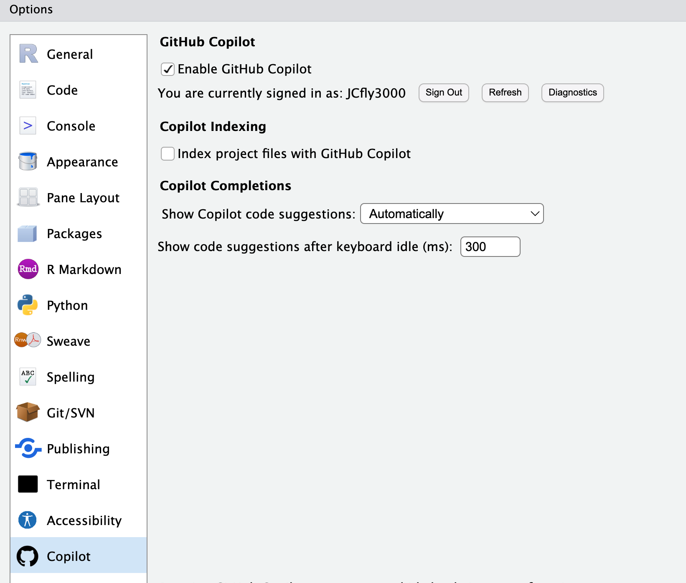
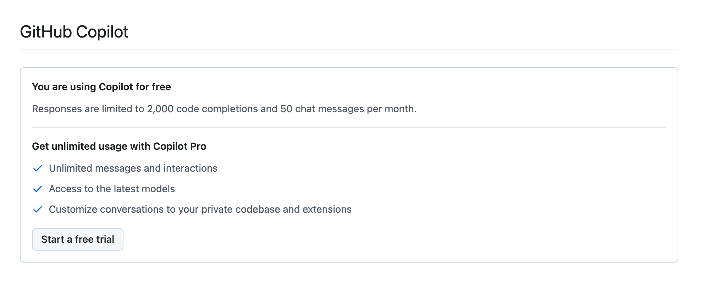
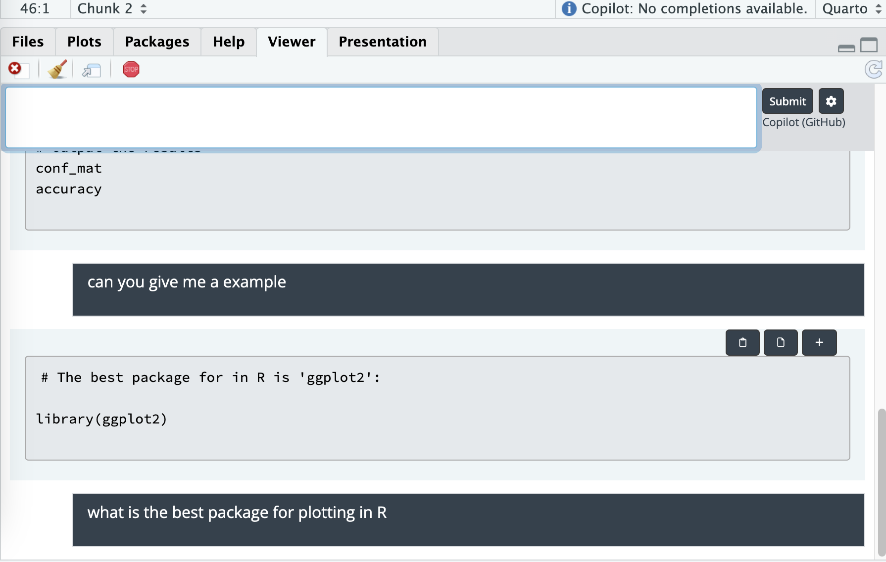

Code
#remotes::install_github("mlverse/chattr")AI tool for writing code

free account is limit per month

#remotes::install_github("mlverse/chattr")library(chattr)Login at https://platform.openai.com/
Goto Settings (gear icon on top right)
Find API Keys from menu on left
Follow the process to Create new secret key
Copy your secret key (it will only show once so make sure you copy it)
Sys.setenv(OpenAI_API_KEY="sk-xxxxxxxx")#copilot do not need OpenAI_API_KEY
chattr_use("copilot")chattr_defaults(prompt = "{readLines(system.file('prompt/base.txt', package = 'chattr'))}")# run
chattr_app(as_job = TRUE)
Done!

#install.packages("usethis") # Install if not already installed
usethis::edit_r_profile().RProfile
#|eval: false
# Load chattr app after RStudio is fully loaded
setHook("rstudio.sessionInit", function(newSession) {
if (newSession) {
Sys.sleep(2) # Wait 2 seconds before starting chattr to ensure RStudio is ready
tryCatch({
library(chattr)
chattr_use("copilot")
#Sys.setenv("OPENAI_API_KEY" = "your-api-key-here")
chattr_defaults(prompt = "{readLines(system.file('prompt/base.txt', package = 'chattr'))}")
chattr_app(as_job = TRUE)
}, error = function(e)
message("Error starting chattr: ", e$message))
}
}, action = "append")https://www.youtube.com/watch?v=t7NrkAeosog
https://github.com/mlverse/chattr